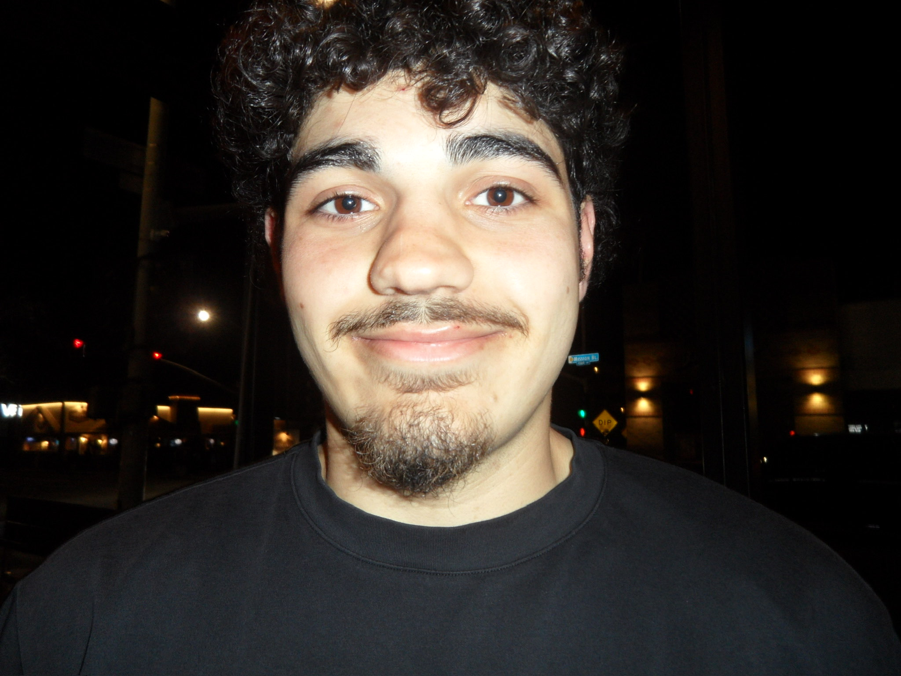

To begin, click your user name

To begin, click your user name

Mathematics-Computer Science Student • UC San Diego
Hey! I'm Emanuel — a Math-CS student at UC San Diego and currently a Technical Program Manager Intern on Chassis Controls at Tesla.
I build full-stack systems, internal tools, and AI-powered workflows — from fleet-planning consoles to agentic booking pipelines. Always open to cool project ideas and collaborations.
8 featured projects
Resume + side projects
A production-style URL shortener with Redis caching, load-balanced Nginx, Dockerized services, and a full CI pipeline with Prometheus/Grafana monitoring.
An AI agent that books medical appointments for you — browsing sites like Zocdoc and placing real phone calls via OpenAI Realtime API, with semantic memory so you don’t re-enter health history every time.
A smart-fridge tracker that watches what’s in your fridge. ESP32 weight sensors stream live data into a MERN app with role-based auth and waste/analytics dashboards.
A gamified study platform with progress dashboards, Auth0 login, and Gemini-powered personalized study prompts so sessions are quicker to start and more fun to finish.
A Selenium bot that grabs hard-to-get UCSD library rooms the moment they open — no more clicking through a five-step booking flow by hand.
An IoT + web stack that connects ESP32 devices to a React/Node backend for real-time monitoring and automated workflow triggers.
A Discord bot that scrapes internship, co-op, and fellowship postings, dedupes them, and drops each new listing into the right role-family channel with optional title ping roles.
A social memory-keeping app for nights out with friends — capture moments, people, and stories from a night in one place. iOS-first MVP on Expo, React Native, and Supabase.
Rebuilt an internal fleet-planning console in React/Vite/Tailwind on Flask/SQLite for 7 Vehicle Software teams (75% less manual cross-checking); designed a weighted release-scoring algorithm ranking 350+ vehicles; reconciled 3 systems into 4-stage source-of-truth tables.
Cut due diligence cycle time by 40% (15+ hrs/week) with Python scrapers over 10,000+ market records; audited 20+ startup stacks for scalability; built an LLM research tool that halved competitive-brief write time.
Led Agile delivery of Garnett (React/Node) for 70+ members at 99%+ uptime and 500+ monthly transactions; cut notification latency 30% with Firebase; mentored 12 engineers across Nutribase and LockedIn.
I'm always open to internships, collaborations, and cool project ideas. Feel free to reach out!
818-624-7395 | EmanuelSNader@gmail.com | in/emanuelnader
gh/EmanuelNader | emanuel-nader.tech
Type the name of a program, folder, document, or Internet resource, and Windows will open it for you.